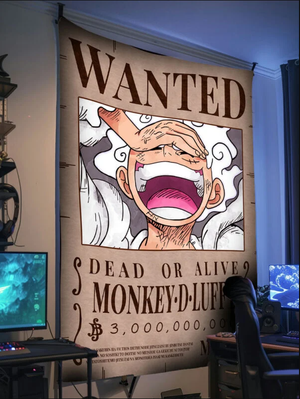

Krishna kumar
Frontend Developer

PROFILE
Aspiring to join a forward-thinking organization as a
Frontend Developer, where I can apply my skills in
HTML, CSS, JavaScript, and modern frameworks to
build responsive and user-centric web applications,
while continuously enhancing my technical expertise
and collaborative abilities
WORK EXPERIENCE
Personal Portfolio Website
HTML,CSS,JAVASCRIPT
- Showcased skills, project highlights, and contact
details in a professional layout.
- Successfully deployed as a live personal website to
support job applications.
Passport Automation System
Python, Flask, SQLite, and Tkinter
- Automated the complete passport application
rocess with both frontend GUI and backend logic.
Streamlined
- Streamlined user workflow with clear navigation
and real-time status tracking
EDUCATION
B.Tech – Information
Technology- MNM Jain Engineering College
2022 – 2026 | CGPA: 7.5
manuel mony Matric. Hr. Sec.
School, 2022 | Percentage: 80%
TECHNICAL SKILLS
- python
- java
- Html,css,javascript
- Node.js
SOFT SKILLS
- Team collabration
- Communication skills
- Problem-solving skills
- Organization and time
management skills